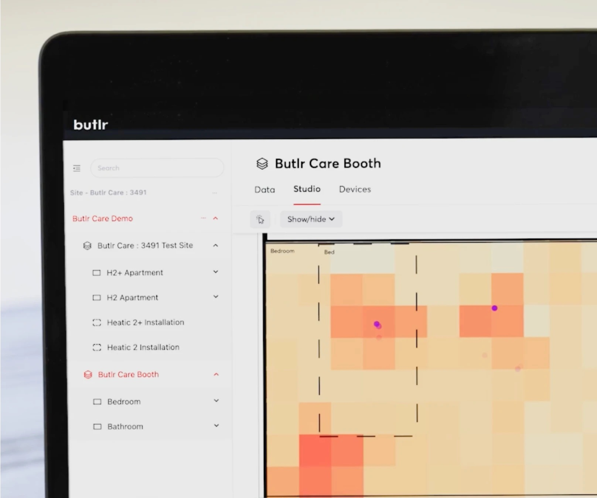

I'm pursuing my Master's in Computer Science at the University of Pennsylvania, specializing in Computer Vision & Machine Learning. This summer I'll be joining Nuro as a SWE Intern on the Compute Platform team. I also conduct research on off-road autonomous driving and racing with xLAB in the GRASP Lab, advised by Professor Rahul Mangharam.
I'm broadly interested in Physical Intelligence — the algorithms and systems that let robots interact with and understand the physical world. Previously, I was a SWE II at Butlr, building real-time spatial intelligence systems using ML, computer vision, and distributed algorithms.
University of Pennsylvania
M.S.E. in Computer Science
2025 – 2027
Focus: CV & Machine Learning · GPA: 3.6
Brigham Young University
B.S. in Computer Science
2019 – 2024
Focus: AI & NLP · GPA: 3.9
ML Infra & Distributed Systems for Autonomous Vehicles
Off-road autonomous driving & racing research, advised by Professor Rahul Mangharam.
Developed and optimized real-time spatial intelligence systems using ML, computer vision, and distributed algorithms across large-scale AWS deployments.
AI & LLM research focusing on attention mechanisms and large-scale training pipelines.
Developed a VSLAM package for integration with the F1Tenth Roboracer platform. Provided a novel mapping and localization solution for Roboracer Autonomous Racing. Package added to Roboracer official integrations.
Autonomous drone racing with PPO, implementing reward shaping, domain randomization, and reducing sim-to-real gap. Trained in simulation, later deployed.

Helped develop an anonymous trajectory tracking system and simulator using Kalman filters for senior living facilities. Later worked on a CV based detection algo to capture boundary crossings.
Autonomous driving pipeline focused on perception-based detection, tracking, and overtaking. Uses UKF, MPC, Frenet Planner, 2D LiDAR, YOLOv26.
Feel free to reach out at jtappen (at) seas (dot) upenn (dot) edu or LinkedIn — I'm always open to collaborating on interesting problems in ML and robotics.